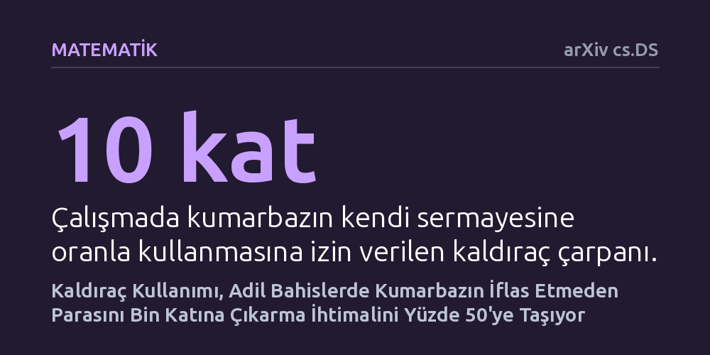

MATEMATIK · arXiv cs.DS · 2026-10-16
Klasik kumarbazın iflası problemine finansal kaldıracın nasıl etki ettiği kuramsal olarak incelendi. Makul bir kaldıraç kullanan bir kumarbazın, sadece adil bahisler oynayarak dahi iflas etmeden parasını bin katına çıkarma ihtimalinin yaklaşık yüzde 50'ye ulaştığı gösterildi.
Adil oyunlarda uzun vadede iflasın kaçınılmaz olduğu kabulünü sarsarak, kaldıraç kullanımının iflas etmeden çok yüksek kazanç elde etme olasılığını şaşırtıcı derecede artırabildiğini ortaya koyuyor.

Olasılık kuramının en bilinen temel sonuçlarından biri 'kumarbazın iflası' problemidir. Bu klasik yaklaşıma göre, adil bir oyunda kasanın sınırsız sermayesine karşı kısıtlı bir parayla masaya oturan oyuncu, ne kadar dikkatli oynarsa oynasın yeterince uzun vadede kaçınılmaz olarak tüm parasını kaybedip iflas eder. Çünkü şans eşit dağılsa bile, parası tükenen oyuncunun oyundan çekilmek zorunda kalması süreci geri döndürülemez kılar.
Peki bu denkleme modern finansın en güçlü ve tehlikeli araçlarından biri olan borçlanma, yani kaldıraç dâhil edilirse ne olur? Bilgisayar bilimci William Kuszmaul, Carnegie Mellon Üniversitesi'ndeki rastgele algoritmalar dersi hazırlıkları sırasında bu yalın sorunun peşine düşüyor. Kendi öz sermayesinin katbekat üzerinde borç alarak bahis yapabilen kuramsal bir kumarbazın, klasik iflas kaderinden kaçıp kaçamayacağını matematiksel olarak sorguluyor.
Bu araştırma laboratuvar deneyleri veya gerçek kumarhanelerden toplanan ampirik veriler içermiyor. Yazar, soyut matematiksel analiz ve olasılık modellemesi yöntemini kullanarak kuramsal bir oyuncu davranışı kurguluyor. Buradaki kumarbaz, kazanma ve kaybetme olasılıkları ile beklenen net getirisi sıfır olan 'adil bahisler' dünyasında hareket ediyor.
İncelenen stratejide, oyuncunun her adımda sermayesine oranla belirli bir kaldıraç çarpanı kullanarak borçlanmasına izin veriliyor. Matematiksel türetimler, oyuncunun iflas etmeden parasını belirli bir katına çıkarma hedefine ulaşması için atması gereken en uygun bahis büyüklüklerini adım adım formüle döküyor. Böylece şans faktörünün zaman içindeki dağılımı rassal yürüyüş kuralları çerçevesinde baştan hesaplanıyor.
Araştırmanın ulaştığı temel formül, oyuncunun parasını r katına çıkarma olasılığının yaklaşık olarak r üzeri eksi 1 bölü L olduğunu gösteriyor. Buradaki L değeri oyuncunun kullandığı kaldıraç oranını temsil ediyor. Bu formül, geleneksel olasılık sezgilerini sarsan bir sonucu ortaya koyuyor: Kaldıraç makul bir seviyede tutulduğunda, iflas riski beklenenin çok altında kalabiliyor.
Somut bir örnek vermek gerekirse, 10 kat kaldıraç kullanan bir kumarbazın, sadece adil oyunlar oynayarak parasını 1000 katına çıkarma ihtimali yaklaşık yüzde 50 olarak hesaplanıyor. Klasik iflas teorisinde sıfıra yakın olan bu olasılık, kaldıraç desteği sayesinde yazı tura atışındaki kadar sıradan bir ihtimale dönüşüyor. Oyuncu çok uzun süre iflas etmeden masada kalmayı ve devasa kazançlar elde etmeyi başarıyor.
Makalede ele alınan 10 katlık kaldıraç oranı aşırı bir fantezi değil; nitekim yazar, 2008 krizinde batan Lehman Brothers yatırım bankasının 1995 ile 2008 yılları arasında bunun çok üzerinde bir kaldıraçla işlem yaptığını hatırlatıyor. Ancak buradaki can alıcı fark, finans kurumlarının aldıkları risklerin bedelini kriz anında tüm finansal sistemin ödemesidir. Yazarın çalışmaya adını veren tespiti, kaldıraçlı borçlanmanın risk dinamiklerine matematiksel bir ayna tutuyor.
Yine de çalışmanın idealize edilmiş varsayımlar üzerine kurulu olduğunu unutmamak gerekir. Gerçek dünyada borçlanmanın faiz maliyeti, teminat tamamlama çağrıları ve işlem komisyonları gibi pürüzler vardır. Ayrıca hiçbir gerçek kumarhane veya piyasa tamamen sürtünmesiz ve adil bahis koşulları sunmaz. Bu çalışma, pratik bir zenginleşme rehberi olmaktan ziyade, borçlanmanın olasılık dinamiklerini nasıl bükebildiğini gösteren kuramsal bir düşünce deneyidir.